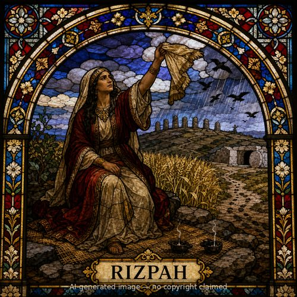

Rizpah — stained-glass style portrait
Rizpah (F)
First named in 2 Samuel 3:7
Rizpah, Saul's concubine, is first mentioned in a dispute between Ish-bosheth and Abner over her, a conflict that helped fracture Saul's already weakening dynasty after his death (2 Samuel 3:7-11). She reappears years later in one of Scripture's most striking scenes of grief. During David's reign, a three-year famine was traced to Saul's earlier violation of Israel's treaty with the Gibeonites, whom he had massacred; seeking atonement, David allowed the Gibeonites to demand seven of Saul's male descendants for execution, among them Rizpah's own two sons, Armoni and Mephibosheth (2 Samuel 21:1-9). The seven bodies were left exposed on a hill at the start of the barley harvest. Rizpah spread sackcloth for herself on the rock beside them and kept vigil there for months, from the beginning of harvest until the rains finally came, driving away birds by day and wild animals by night so that no scavenger could touch the bodies (21:10). Word of her prolonged, sleepless devotion reached David, who was moved to retrieve not only these seven but also the long-unburied bones of Saul and Jonathan, giving all of them a proper burial together in the family tomb (21:11-14) -- after which Scripture notes that God was moved by prayer for the land. Rizpah's silent, months-long act of mourning and protection reshaped how an entire royal house's dead were finally honored.
Thought for Today
Rizpah guarded her sons' bodies for months, refusing to let them go unmourned. Jesus, too, was watched over even in death by those who loved Him.
References: 2 Samuel 3:7; 2 Samuel 21:8-11